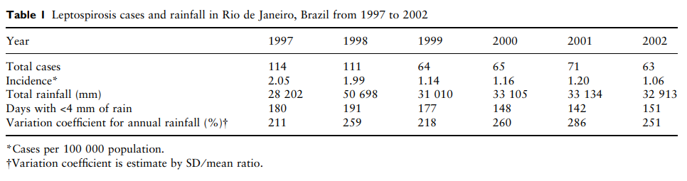
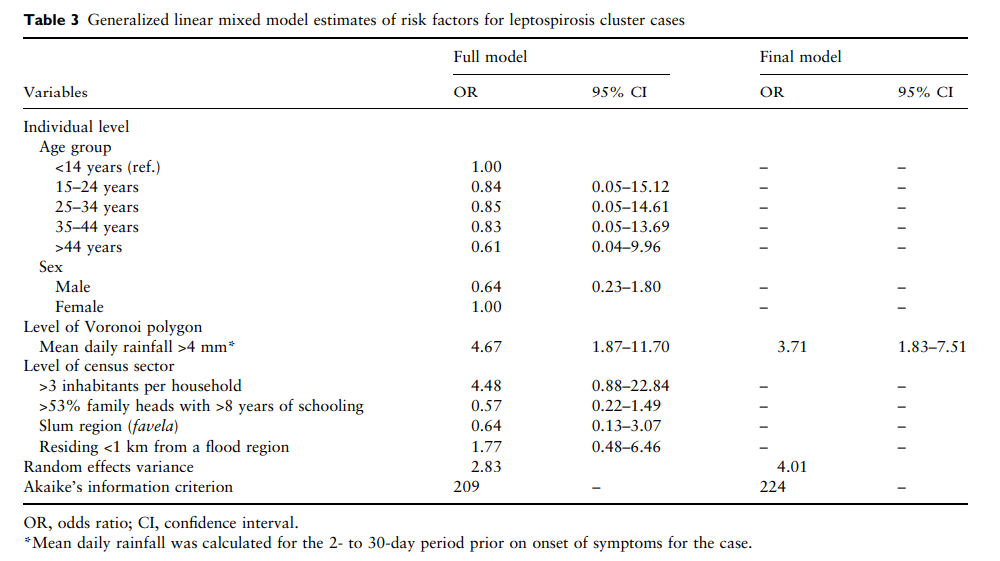
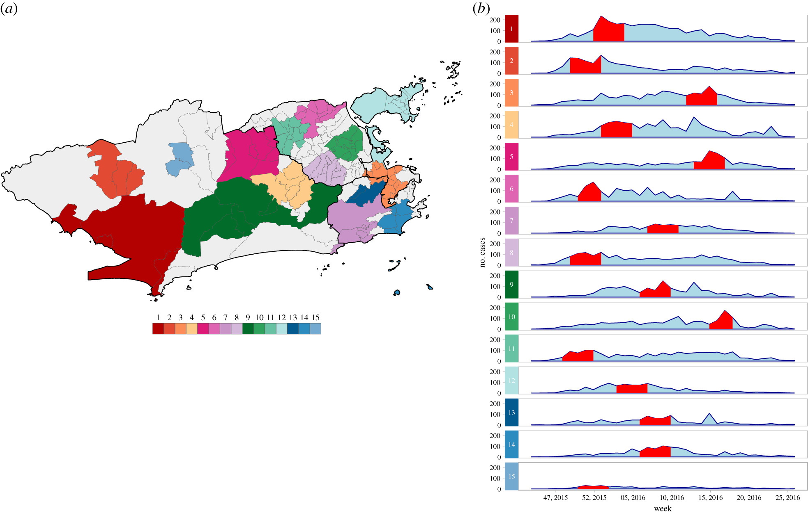
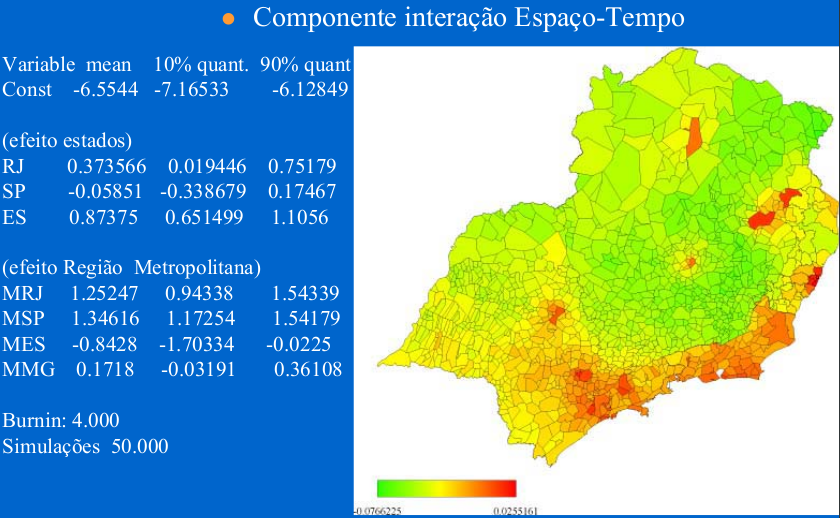

13 Análise Espaço-Temporal
13.1 Alguns Conceitos
“Senhores, as idéias sobre espaço e tempo que eu gostaria de falar a vocês nasce do solo da física experimental. É daí que provem sua força. A proposta é radical. De agora em diante, espaço por si só e tempo por si só, devem desaparecer nas sombras, enquanto somente a união dos dois preserva sua independência.”
Minkowski, setembro de 1908
O interesse na distribuição espaço-temporal esteve presente desde os primórdios da epidemiologia.
Entretanto só recentemente tem sido utilizadas técnicas que permitem a incorporação das dimensões tempo, espaço e somente recentemente a interação espaço-tempo.
13.2 Processo de difusão das doenças
Um exemplo de simulação por multi-agentes

13.2.1 Difusão Espacial
** Difusão** - dispersar a partir de um centro, disseminar, propagar, espalhar.
Em geografia utiliza-se 2 conceitos:
- Difusão por expansão: Quando um material, uma informação, etc… se espalha de um local p/ o outro, permanecendo (ou até mesmo se intensificando) na região inicial.
Ex: doença transmissível.
- Difusão por realocação: Quando o material difundido deixa a área original e se move p/ novas áreas.
Ex: Movimentos migratórios.
Difusão por expansão também pode ocorrer através de uma seqüência de classes locais, neste caso é denominado espalhamento hierárquico (ex: moda, bens de consumo), que tendem a passar por classes sociais diferentes e se irradia a partir das grandes metrópoles.
Difusão em cascata é um caso particular, onde a difusão sempre se dá dos grandes centros p/ os menores.
Na geografia houve um grande interesse por modelos de difusão desde do inicio do século, e se intensificou a partir da década de 50 com o trabalho pioneiro de Hägerstrand. Um dos principais interesses dos geógrafos eram os modelos de difusão de inovações tecnológicas.
Na epidemiologia, por outro lado, devido a influência de Ross e Hamer, os modelos compartimentais foram mais utilizados.
13.2.2 Espacializando a difusão das doenças
O principal desafio é como introduzir as dimensões espaço e tempo na modelagem da difusão das doenças transmissíveis.
Qual o impacto do espaço e da interação espaço-tempo ?
Eles são capazes de mudar parâmetros inferidos para a interação das populações envolvidas ?
São capazes de trazer novidades na análise e interpretação de resultados ?
Quais os possíveis modelos e maneiras de incorporar o espaço e tempo ?
13.2.3 Processo de difusão das doenças
Sob o ponto de vista da Ecologia, mais especificamente da dinâmica de populações uma doença transmissível, é o resultado da interação entre pelo menos 2 espécies (parasita X hospedeiro).
Também na ecologia os modelos de crescimento populacional, interação entre espécies, competição e etc… apesar de utilizarem o tempo em suas equações de crescimento Lotka-Volterra não incorporam a dimensão espaço.
A introdução do espaço nos modelos, mesmo com uma única espécie, é capaz de alterar a inferência dos parâmetros a respeito da dinâmica desta espécie.
13.2.4 Modelos de difusão de doenças
No início do século XX surgiram os primeiros modelos de transmissão de doenças , que consideravam que o curso de uma epidemia deveria depender do número de suscetíveis, das taxas de contato entre os indivíduos infectados e suscetíveis e do número de infectados.
A partir daí, diversos modelos determinísticos foram empregados permitindo inferir parâmetros de epidemias.
À medida em que o interesse se volta para pequenas populações e eventos raros, foram introduzidos modelos estocásticos.
No entanto, a medida que se adiciona variáveis (por exemplo, estrutura etária, populações de vetor) esses modelos se tornam muito complexos, dificultando ou impossibilitando uma solução analítica.
Neste contexto pode-se empregar métodos numéricos ou simulações na estimação parâmetros. No entanto a inclusão do espaço e tempo dificultam em muito ou mesmo inviabilizam a convergência nessa classe de modelos.
Os avanços recentes na modelagem espaço-temporal empregam modelos bayesianos (MCMC) espaço-temporais.
13.3 Analise Exploratória Espaço-temporal
Animação da Taxa bruta dos Homicídios em homens de 15-49 anos no sudeste de 1980 a 1998
Animação da Taxa suavizada no tempo (media móvel) e no espaço (Kernel 2d) Homicídios em homens de 15-49 anos no sudeste de 1980 a 1998
13.4 Cluster Espaço-Temporal
Um cluster (conglomerado) é definido como uma região cujo risco de ocorrência de um fenômeno é alto quando comparado às demais áreas.
Objetivo: identificar áreas de risco elevado em áreas especı́ficas da região de estudo.
A estatı́stica Scan pode ser aplicada a dados espaciais, temporais ou espaço-temporais, para vários modelos de probabilidade.
Quando se trata de estudos com dados de contagem (por exemplo, número de homicídios por localidade) os modelos de probabilidade comumente usados são Poisson e de Permutação Espaço-Tempo.
Alternativa aos Índices I de Moran e C de Geary.
13.4.1 A estatı́stica Scan
O modelo Permutação Espaço-Tempo possui a mesma ideia básica do modelo Poisson, entretanto três caracterı́sticas o diferenciam:
Este modelo só trabalha com interação espaço-tempo, ou seja, procura apenas conglomerados que ocorrem no espaço e no tempo simultaneamente;
Têm a flexibilidade de trabalhar apenas com os casos, ou seja, não é necessário informação da população;
Seu modelo probabilı́stico resulta que os casos seguem a distribuição Hipergeométrica, sob a hipótese nula.
A estatı́stica Scan foi desenvolvida por Kulldorff e Nagarwalla (1995) e, para sua aplicação, a informação da área é associada a um único ponto dentro do polígono (ex: centróide).
O método então faz uma varredura por toda região em busca de áreas cuja ocorrência de um fenômeno seja significativamente mais provável.
A busca por conglomerados ocorre da seguinte forma:
Em cada centróide posiciona-se um cı́rculo de raio variável e calcula-se o número de ocorrências dentro do cı́rculo.
Caso o valor observado seja maior que o esperado, a região z delimitada pelo cı́rculo é chamada de conglomerado, caso contrário, o raio do cı́rculo é aumentado até envolver um novo centroide.
Este processo é realizado até que todos os centroides tenham sido testados.
A hipótese nula é de que não existe conglomerados na região de estudo.
As hipóteses são testadas por meio de um teste da razão de verossimilhança.
Simulação é utilizada para verificar a significância.
A estatı́stica Scan permite incorporar o fator temporal, ao invés de cı́rculo são utilizados cilindros.
13.4.2 Aplicação 1 - Leptospirose no Rio de Janeiro
Detection and modelling of case clusters for urban leptospirosis



Clusters ocorreram no verão com uma janela temporal de 14 a 25 dias.


13.4.3 Aplicação 2 - Arboviroses no Rio de Janeiro

Zika cases clusters

Dengue, chikungunya and Zika multivariate clusters
13.5 Modelagem Estatística Espaço-temporal
Diversas estratégias podem ser empregadas para modelar fenômenos espaço-temporais. Sendo que esta área recentemente, diversas famílias de modelos tem sido propostos. A seguir mostraremos uma aplicação utilizando Modelo Hierárquico Bayesiano Espaço-Temporal.
Modelagem Espaço-temporal dos homicídios na Região Sudeste, utilizando Modelos Aditivos Generalizados Mistos (GAMM).
O modelo proposto segue uma distribuição de Poisson, onde o numero de casos de homicídios em cada município num determinado ano é dado por:
Componente de tendência temporal;
Componente espacialmente estruturado;
Componente espacial não estruturado (aleatório);
Efeito de pertencer ou não a um determinado estado;
Pertence ou não a uma região metropolitana.
Modelo aditivos generalizados mistos (GAMM):
\[y_{it} \sim Poisson(\lambda_{it})\]
\[log(\lambda_{it}) = offset(pop) + \beta_i\sum x_{ik} + f^{tend}_{tempo} + f^{sazonal}_{tempo} + f^{estrut}_{espaço} + f^{ñestrut}_{espaço}\]
Sendo \(\beta_i\sum x_{ik}\) os efeitos fixos.
A estimação dos parâmetros foi obtida por inferência bayesiana utilizando-se o software [BayesX]{https://www.uni-goettingen.de/de/what+is+bayesx/550520.html}, onde também foi criada a matriz de vizinhança utilizada neste trabalho.
Os diagnósticos de convergência fora realizados no S-plus.
13.5.1 Alguns resultados



13.6 Bibliografia sugerida
Bernardinelli L, Clayton D, Pascutto C, Montomoli C, Ghislandi M, Songini M. Bayesian analysis of space–time variation in disease risk. Stat Med. 1995;14:2433–2443.
Diggle,P.J.; Chetwynd,A.G.; Haggkvist,R.; Morris,S.E. (1995). Second-order analysis of space-time clustering. Statistical Methods in Medical Research 4 , 124-136
Waller LA, Carlin BP, Xia H, Gelfand AE. Hierarchical spatiotemporal mapping of disease rates. J Am Stat Assoc. 1997;92:607–617.
Knorr-Held L, Besag J. Modelling risk from a disease in time and space. Stat Med. 1998;17:2045–2060.
Knorr-Held L. Bayesian modelling of inseparable space–time variation in disease risk. Stat Med. 2000;19:2555–2567.
- Online
Geospatial Health Data: Modeling and Visualization with R-INLA and Shiny